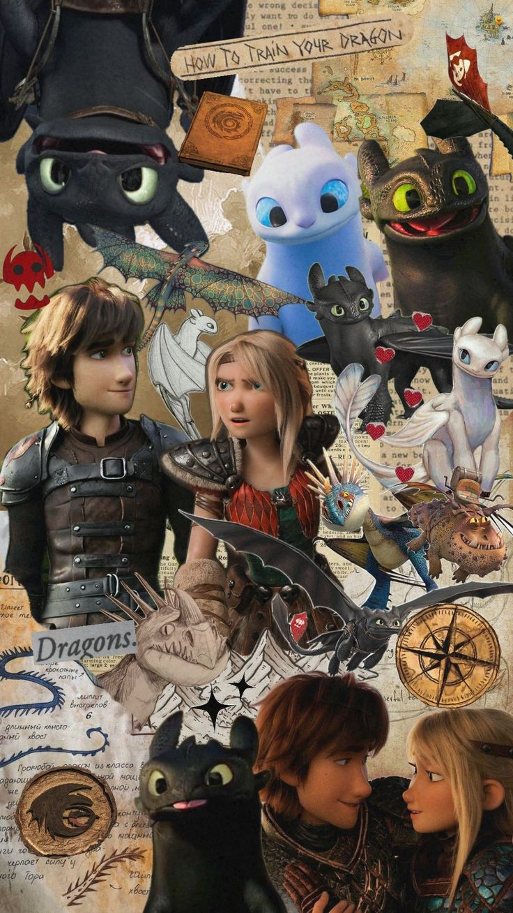

La Leyenda de Hipo y Chimuelo
En la isla de Mema, los vikingos se dedican a combatir a los dragones. Sin embargo, un joven cambiará el destino de su pueblo para siempre.
1. Un Vikingo Diferente
Hipo es el hijo del jefe. A diferencia de los demás, no tiene la fuerza física para cazar dragones, pero lo compensa con su gran ingenio.
2. El Furia Nocturna
Tras derribar por accidente al dragón más misterioso de todos, descubre que todo lo que su pueblo cree saber sobre ellos está mal.
Tráiler de la Película
Una Amistad Inquebrantable
Al construirle una prótesis para su cola, Hipo y Chimuelo crean un vínculo único.

Lecciones de Vuelo
Hipo aprende a volar junto a Chimuelo, descubriendo los secretos del cielo.